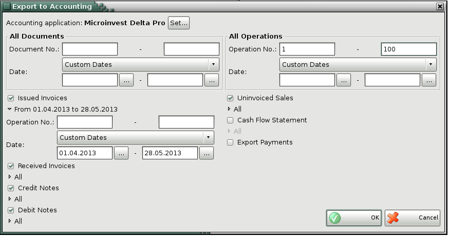

Export to Accounting
This module is made for automatical accounting of the enteref in IncoPOS documents - Issued Invoices, Received Invoices, Credit Notes, Debit Notes and Uninvoiced Sales, Cash Reports and Export payments to accounting programs Microinvest Delta Pro and 1C.
It is necessary to choose which product will perform the import, to highlight the document you want to export and to specify the period of time to which they relate, or set a range of documents.

Through the edit button Set, you can change the accounting program that will generate a file. After selecting the button the program sends you to Other-> Settings-> Accounting, where you can change the software.
The program creates a file in your specified folder.
�2006-2015 Microinvest, All rights reserved